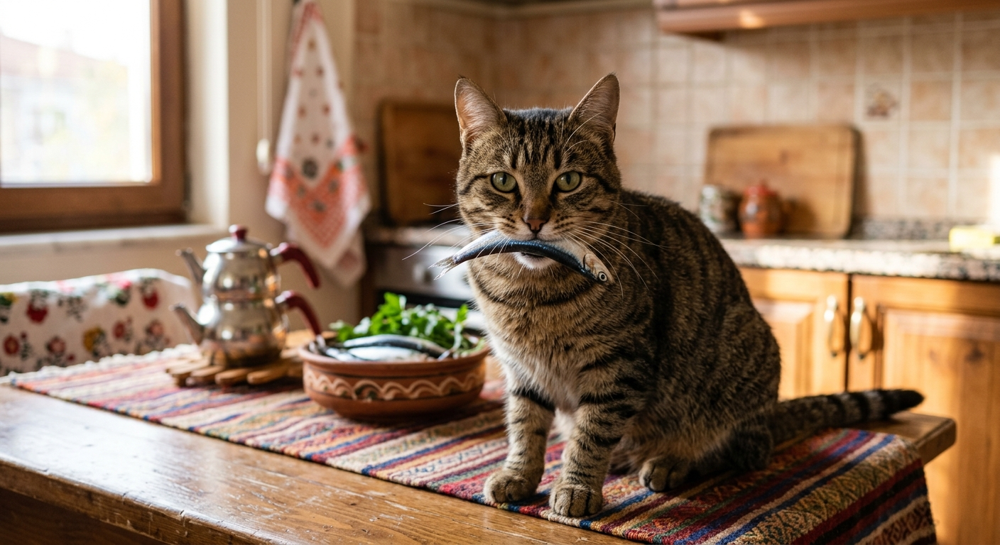

Bu web sitesi, kedilerin gizemli ve büyüleyici dünyasına adım atmak isteyenler için hazırlanmış çok basit ve anlaşılır bir kaynaktır. Aşağıdaki içindekiler tablosunu kullanarak doğrudan ilgili bölüme gidebilir ve sayfa içindeki bağlantılarla kolayca gezinebilirsiniz.
Kediler, binlerce yıldır insanlarla birlikte yaşayan, evcil hayvanlar arasında en popüler ve en gizemli varlıklardan biridir. Tarih boyunca antik Mısır'dan günümüze kadar pek çok medeniyette kutsal sayılmış veya baş tacı edilmişlerdir. Onların bu kadar sevilmesinin en büyük sebebi, hem bağımsız ve gururlu duruşları hem de sahiplerine karşı gösterdikleri sessiz ama derinden bağlılıktır.
Aşağıya kedilerin sevimli bir temsilini gösteren örnek bir görsel eklenmiştir:

Kediler, doğuştan gelen kusursuz avcı yetenekleriyle bilinen son derece atletik canlılardır. Esnek omurgaları ve kas yapıları sayesinde, yüksek yerlerden kolayca düşebilir ve genellikle ayakları üzerine inebilirler. Görme duyuları, özellikle loş ışıkta insanlardan katbekat üstündür.
Bıyıkları ise sadece sevimli bir detay değil, çevrelerindeki hava akımlarını algılamalarını ve dar alanlardan geçip geçemeyeceklerini hesaplamalarını sağlayan çok hassas birer radar sistemidir.
Davranışsal olarak kediler kendilerine has karakterlere sahiptir. En bilinen özelliklerinden biri mırlamalarıdır. Kediler sadece mutlu olduklarında değil, stres yaptıklarında veya kendilerini sakinleştirmek istediklerinde de mırlarlar.
Aşağıda kedilerin karakteristik özelliklerini simgeleyen ikinci bir görsel yer almaktadır:
Bir kediye sahip olmak büyük bir sorumluluk gerektirir. Kedilerin sağlıklı, uzun ve mutlu bir ömür sürebilmesi için temel bazı bakımlara dikkat edilmelidir.